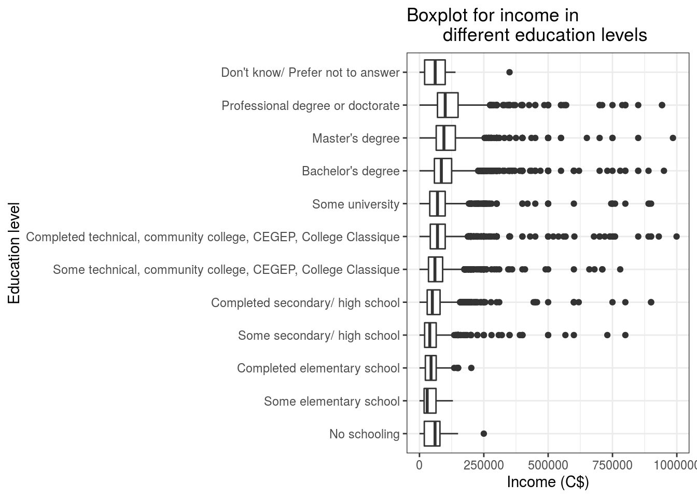

Abstract
My research problem is the influence of education levels in the amount of income they earn. My report uses data analyzation and a graph (boxplot) as research methods. My conclusion for the research is when the education level is higher, people earn more in amount of income. Nonetheless, people who are no schooling can be consider as a special group that does not follow the rule of conclusion.
Introduction
In this report, we want to find the relationship between education levels and income. We choose education level as an explanatory variable and income as a response variable. Then, we will analayze the data contain only two variables (educaation and income) from the large dataset decon. Moreover, we can draw the boxplot of income in each education level. By comparing the data with the drawn graph, we can find the main conclusion for the relationship between these two variables: As the higher education level for Canadian people, the more income they get for a year in 2018.
Nonetheless, there exists a special group of people that do not follow the aboved conclusion. People who are no schooling have quite low education level among people who take the survey, but these people earn nearly half of income of people who are professional degree or doctorate, and even they earn money higher than the income of people who are from complete and some secondary/ high schools or complete and some elementary schools.
In the following part, I will indicate how to form a new dataset from the original dataset and describe my findings in details by using data analyzation and a graph. Moreover, I will indicate some weaknesses for this survey, including the missing data and response error, and introduce methods to avoid the weaknesses to affect data results. At last, I list all my references for this report.
Data discussion
We use the CES dataset, which is called the Canadian Election Study Datasets and surveyed in 2019, by installing the package cesR through the get_decon() function. After the function calling, decon dataset contain 37822 observations of 23 variables. We use packages from Wickham et al. (2019), Hodgetts and Alexander (2020), Wickham, Hester, and Chang (2020), Larmarange (2020) to get the data.
The variables we focus on are education levels and income. We want to find the relationship between education levels and income. I consider the education levels as the independent variable, while the income is the dependent variable.By filtering out the NA of income, and filtering out the large amount of income that is greater than 1000000 Canadian dollars in 2018, we form a new dataset decon1. Since it is so hard to earn the income greater than 1000000 Canadian dollars and no more than 10 people in Canada can earn money exceeds 1000000 Canadian dollars for each year, we consider these datum of income are not accurate in the survey and remove these extreme values. Then, I select two variables education levels and income that I want to analyze from the dataset decon1, and get another dataset decon2.
To analyze the reponse variable income, I use summarise function to indicate the mean, median, standard deviation, minimum and maximum of income by only using one reponse variable income in the dataset decon2. According to calculated results, the mean of income is 84317.88 Canadian dollars, the median of income is 72000 Canadian dollars, standard deviation of income is 68723.6, variance of income is 4722932783, the minimum of income is 0 Canadian dollars and maximum of income is 999000 Canadian dollars.
After the analyzation of income, I group by each education level and compare the mean and median of income in different education levels. Then, we find that: People who are Professional degree or doctorate can earn the mean of income 129607.39 Canadian dollars and median of income 100000 Canadian dollars. People who are Master’s degree can earn the mean of income 107422.39 Canadian dollars and median of income 95000 Canadian dollars. People who are Bachelor’s degree can earn the mean of income 98172.45 Canadian dollars and median of income 85000 Canadian dollars. People who are from some university can earn the mean of income 80921.33 Canadian dollars and median of income 70000 Canadian dollars. People who are from Completed technical, community college, CEGEP, College Classique can earn the mean of income 80017.69 Canadian dollars and median of income 70000 Canadian dollars. People who do not know or prefer not to answer their education levels can earn the mean of income 72652.22 Canadian dollars and median of income 61000 Canadian dollars. People who are from some technical, community college, CEGEP, College Classique can earn the mean of income 70263.89 Canadian dollars and median of income 60000 Canadian dollars. People who are no schooling can earn the mean of income 66182.67 Canadian dollars and median of income 60500 Canadian dollars. People who are no schooling can earn the mean of income 66182.67 Canadian dollars and median of income 60500 Canadian dollars. People who are from Completed secondary/ high school can earn the mean of income 61736.93 Canadian dollars and median of income 50000 Canadian dollars. People who are from some secondary/ high school can earn the mean of income 54469.90 Canadian dollars and median of income 40000 Canadian dollars. People who are from completed elementary school can earn the mean of income 50858.68 Canadian dollars and median of income 45000 Canadian dollars. People who are from some elementary school can earn the mean of income 42352.65 Canadian dollars and median of income 30000 Canadian dollars.
## # A tibble: 1 x 6
## income_mean income_median income_sd income_var income_min income_max
## <dbl> <dbl> <dbl> <dbl> <dbl> <dbl>
## 1 84318. 72000 68724. 4722932783. 0 999000
## # A tibble: 12 x 3
## education mean_income_by_educ… median_income_by_ed…
## <fct> <dbl> <dbl>
## 1 Professional degree or doctorate 129607. 100000
## 2 Master's degree 107422. 95000
## 3 Bachelor's degree 98172. 85000
## 4 Some university 80921. 70000
## 5 Completed technical, community col… 80018. 70000
## 6 Don't know/ Prefer not to answer 72652. 61000
## 7 Some technical, community college,… 70264. 60000
## 8 No schooling 66183. 60500
## 9 Completed secondary/ high school 61737. 50000
## 10 Some secondary/ high school 54470. 40000
## 11 Completed elementary school 50859. 45000
## 12 Some elementary school 42353. 30000Graph and graph discussion
I create boxplots for the relationship between education levels and income. Since education level is a categorical variable and income is a numerical variable, we choose boxplots to indicate the income in different education levels.
In this graph, we find that people who are professional degree or doctorate have the largest median and IQR of income among all the people with different education levels. The distribution of the boxplot for income of people who are professional degree or doctorate is right skewed. People who are from some elementary schools have the smallest median of income among people in different education levels. The distribution of the boxplot for income of people who are from some elementary schools is right skewed. From boxplots of different education levels, there is few outliers in boxplots of income for people who do not know/ prefer not to answer the education levels, who are from complete elementary school, who are from some elementary school, and who are no schooling. In the opposite phenomenon, there are lots of outliers in boxplots of income for people who are Professional degree or doctorate, who are Master’s degree, who are Bachelor’s degree, who are from some univeristies, who are from Completed and some technical, community college, CEGEP, College Classique, and who are from completed and some secondary/ high schools.

Discussion
The survey mainly shows that as the education level of person becomes higher, the income of this person is higher in Canada. From both data analyzation and the boxplot for each education level, we can clearly see that in 2018, people who are professional degree or doctorate earn the most money, while people who are from some elementary school earn the least money in Canada. However, there is a particular group of people who are no schooling. The income of these people does not follow the rule of my findings, as their education levels are not high at all, the income reaches almost half of the income of people who are professional degree or doctorate. Moreover, the data shows that no matter the Canadians’ education levels, their overall income mean (84317.88 Canadian dollars) and median (72000 Canadian dollars) is quite high in the whole year 2018. The survey results indicate that Canada is a developed country with high amount of income for Canadians.
Weaknesses and next steps
THe survey contains limitations as well. For example, there are lots of missing reponses for answering income and education levels. This will cause the mean and median of income to be inaccurate. Therefore, I filter out all NA values to decrease the inaccuarcy of the data. Furthermore, some people tell the wrong income in the survey as they indicate their income are greater than 1000000 Canadian dollars for one year in 2018. I have doubts about the truth of income because I think that there is no more than 10 people in Canda will earn money greater than 1000000 Canadian dollars. This could cause the response error in the survey. Thus, I eliminate the data with income greater than 1000000 Canadian dollars.
References
- Stephenson, Laura B; Harell, Allison; Rubenson, Daniel; Loewen, Peter John, 2020, ‘2019 Canadian Election Study - Online Survey’, https://doi.org/10.7910/DVN/DUS88V, Harvard Dataverse, V1
- Paul A. Hodgetts and Rohan Alexander (2020). cesR: Access the CES Datasets a Little Easier.. R package version 0.1.0.
- Hadley Wickham, Jim Hester and Winston Chang (2020). devtools: Tools to Make Developing R Packages Easier. https://devtools.r-lib.org/,https://github.com/r-lib/devtools.
- R Core Team (2020). R: A language and environment for statistical computing. R, Foundation for Statistical Computing, Vienna, Austria. URL, https://www.R-project.org/.
- JJ Allaire and Yihui Xie and Jonathan McPherson and Javier Luraschi and Kevin Ushey and Aron Atkins and Hadley Wickham and Joe Cheng and Winston Chang and Richard Iannone (2020). rmarkdown: Dynamic Documents for R. R package version 2.3. URL https://rmarkdown.rstudio.com.
- Wickham et al., (2019). Welcome to the tidyverse. Journal of Open Source Software, 4(43), 1686, https://doi.org/10.21105/joss.01686
- Zeileis A, Fisher JC, Hornik K, Ihaka R, McWhite CD, Murrell P, Stauffer R, Wilke CO (2019). “colorspace: A Toolbox for Manipulating and Assessing Colors and Palettes.” Technical Report 1903.06490, arXiv.org E-Print Archive. <URL: http://arxiv.org/abs/1903.06490>.
- Paul A. Hodgetts and Rohan Alexander (2020). cesR: Access the CES Datasets a Little Easier.. R package version 0.1.0.
- Joseph Larmarange (2020). labelled: Manipulating Labelled Data. R package version 2.6.0. https://CRAN.R-project.org/package=labelled
Hodgetts, Paul A., and Rohan Alexander. 2020. CesR: Access the Ces Datasets a Little Easier.
Larmarange, Joseph. 2020. Labelled: Manipulating Labelled Data. http://larmarange.github.io/labelled/.
Wickham, Hadley, Mara Averick, Jennifer Bryan, Winston Chang, Lucy D’Agostino McGowan, Romain François, Garrett Grolemund, et al. 2019. “Welcome to the tidyverse.” Journal of Open Source Software 4 (43): 1686. https://doi.org/10.21105/joss.01686.
Wickham, Hadley, Jim Hester, and Winston Chang. 2020. Devtools: Tools to Make Developing R Packages Easier.